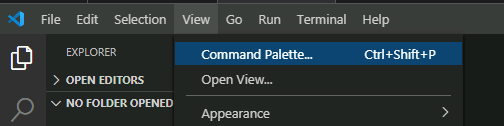
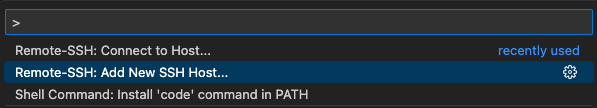
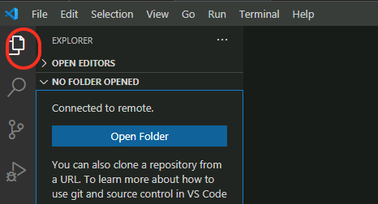
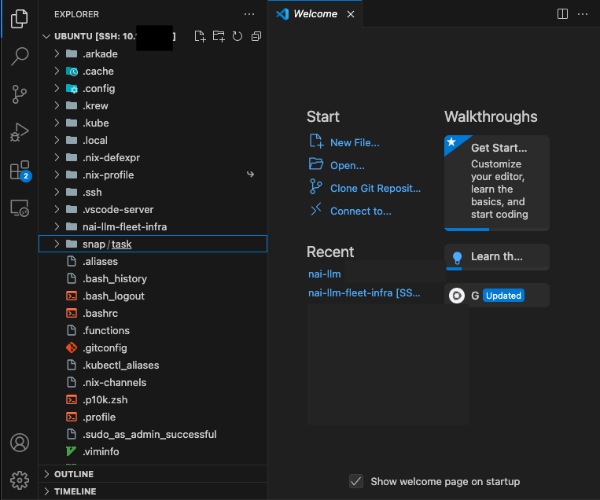

Deploy Jumphost
We will go through three phases in this section to deploy jumphost VM which you will use to deploy AI applications.
- Create Cloud-Init: needed to bootstrap JumpHost VM on Nutanix AHV using OpenTofu
- Create Jumphost VM: needed to remotely connect and run deployment workflows accessible to Nutanix Infrastructure.
- Deploy Nutanix AI Utils: needed to bootstrap, monitor and troubleshoot Nutanix Cloud-Native AI applications using Gitops across fleet of Nutanix Kubernetes Clusters.
stateDiagram-v2
direction LR
state DeployJumpHost {
[*] --> CreateCloudInit
CreateCloudInit --> CreateJumpHostVM
CreateJumpHostVM --> DeployNaiUtils
DeployNaiUtils --> [*]
}
PrepWorkstation --> DeployJumpHost
DeployJumpHost --> DeployNkp : Next Section (Option A)
DeployJumpHost --> DeployNke : Next Section (Option B)Prerequisites
- OpenTofu cli, see installation instructions here.
- Existing Nutanix AHV Subnet configured with IPAM
- SSH Public Key needed for initial
cloud-initbootstrapping- On MacOS/Linux machine, see Generate a SSH Key on Linux example.
- On Windows machine, see Generate a SSH Key on Windows example.
Jump Host VM Requirements
Based on the Nutanix GPT-in-a-Box specifications, the following system resources are required for the Jump Host VM:
- Target OS:
Ubuntu 24.04 LTS
Minimum System Requirements:
| CPU | Cores Per CPU | Memory | Storage |
|---|---|---|---|
| 2 vCPU | 4 Cores | 16 GiB | 300 GiB |
Create Jump Host VM
In the following section, we will create a Jump Host VM on Nutanix AHV using both Visual Studio Code (VSCode) and OpenTofu.
-
Open
VSCode, Go to File -> New Window , Click on Open Folder and create new workspace folder (i.e.,tofu-workspace). -
In
VSCodeExplorer pane, Click on New Folder and name it:jumphost-vm -
In the
jumphost-vmfolder, click on New File with the following name -
Paste the following contents inside the file:
cloud-init.yaml#cloud-config hostname: nai-llm-jumphost package_update: true package_upgrade: true package_reboot_if_required: true packages: - open-iscsi - nfs-common runcmd: - systemctl stop ufw && systemctl disable ufw users: - default - name: ubuntu groups: sudo shell: /bin/bash sudo: - 'ALL=(ALL) NOPASSWD:ALL' ssh-authorized-keys: - ssh-rsa XXXXXX.... # (1)-
Copy and paste the contents of your
~/.ssh/id_rsa.pubfile or any public key file that you wish to use.
If you are using a Mac, the command
pbcopycan be used to copy the contents of a file to clipboard.Cmd+v will paste the contents of clipboard to the console.
Warning
If needed, make sure to update the target
hostnameand copy / paste the value of the RSA public key in thecloudinit.yamlfile. -
-
In
VSCodeExplorer, within thejumphost-vmfolder, click on New File and create a config file with the following name:Update Nutanix environment access details along with any Jump Host VM configurations. See example file for details
jumphostvm_config.yamlendpoint: "PC FQDN" user: "PC user" password: "PC password" cluster_name: "PE Cluster Name" subnet_name: "PE subnet" name: "nai-llm-jumphost" num_vcpus_per_socket: "4" num_sockets: "2" memory_size_mib: 16384 disk_size_mib: 307200 source_uri: "https://cloud-images.ubuntu.com/releases/24.04/release/ubuntu-24.04-server-cloudimg-amd64.img"jumphostvm_config.yamlendpoint: "pc.example.com" # < Change to PC endpoint > user: "user01" # < Change to PC admin user> password: "XXXXXXXX" # < Change to PC admin pass> cluster_name: "mypecluster" # < Change to PE element cluster name > subnet_name: "VLAN.20" # < Change to PE element subnet name > name: "nai-llm-jumphost" # (1)! num_vcpus_per_socket: "4" num_sockets: "2" memory_size_mib: 16384 disk_size_mib: 307200 source_uri: "https://cloud-images.ubuntu.com/releases/24.04/release/ubuntu-24.04-server-cloudimg-amd64.img"- make sure to update
hostnamewith same name defined withincloudinit.yaml.
Tip
If you are using a Mac and
pbcopyutility as suggested in the previous command's tip window, Cmd+v will paste the contents of clipboard to the console. - make sure to update
-
In
VSCodeExplorer pane, navigate to thejumphost-vmfolder, click on New File and create a opentofu manifest file with the following name:with the following content:
jumphostvm.tfterraform { required_providers { nutanix = { source = "nutanix/nutanix" version = "1.9.5" } } } locals { config = yamldecode(file("${path.module}/jumphostvm_config.yaml")) } data "nutanix_cluster" "cluster" { name = local.config.cluster_name } data "nutanix_subnet" "subnet" { subnet_name = local.config.subnet_name } provider "nutanix" { username = local.config.user password = local.config.password endpoint = local.config.endpoint insecure = true wait_timeout = 60 } resource "nutanix_image" "machine-image" { name = element(split("/", local.config.source_uri), length(split("/", local.config.source_uri)) - 1) description = "opentofu managed image" source_uri = local.config.source_uri } resource "nutanix_virtual_machine" "nai-llm-jumphost" { name = local.config.name cluster_uuid = data.nutanix_cluster.cluster.id num_vcpus_per_socket = local.config.num_vcpus_per_socket num_sockets = local.config.num_sockets memory_size_mib = local.config.memory_size_mib guest_customization_cloud_init_user_data = base64encode(file("${path.module}/cloud-init.yaml")) disk_list { data_source_reference = { kind = "image" uuid = nutanix_image.machine-image.id } disk_size_mib = local.config.disk_size_mib } nic_list { subnet_uuid = data.nutanix_subnet.subnet.id } depends_on = [nutanix_image.machine-image] } output "nai-llm-jumphost-ip-address" { value = nutanix_virtual_machine.nai-llm-jumphost.nic_list_status[0].ip_endpoint_list[0].ip description = "IP address of the Jump Host vm" } -
Open a terminal within
VSCode, Terminal > New Terminal -
Initialize and Validate your tofu code
-
Apply your tofu code to create Jump Host VM
Type
yesto confirm -
Obtain the IP address of the
Jump HostVM from the Tofu output -
Run the Terraform state list command to verify what resources have been created
# Sample output for the above command data.nutanix_cluster.cluster # < This is your existing Prism Element cluster data.nutanix_subnet.subnet # < This is your existing primary subnet nutanix_image.machine-image # < This is the image file for `Jump Host` VM nutanix_virtual_machine.nai-llm-jumphost # < This is the `Jump Host` VM -
Validate that the
Jump HostVM is accessible using VSCode > Terminal
Initiate Remote-SSH Connection to Jumpbox using VSCode
- In VSCode, click on Settings menu icon (gear icon)
 > Settings > Extensions
> Settings > Extensions - In the search window search for Remote SSH
- Install the Remote-SSH Extension from VSCode Marketplace
-
click on the Install button for the extenstion.
-
From your workstation, open Visual Studio Code.
-
Click View > Command Palette.

-
Click on + Add New SSH Host

-
Type
ssh ubuntu@jumphost_VM-IP-ADDRESSand hit Enter.
-
Select the location to update the config file.
-
Open the ssh config file on your workstation to verify the contents. It should be similar to the following content
-
This is Jumphost VM IP address
-
This would be the path to RSA private key generated in the previous JumpHost section
Now that we have saved the ssh credentials, we are able to connect to the jumphost VM
-
Connect to you Jumpbox using VSCode
-
On
VSCode, Click View > Command Palette and Connect to Host -
Select the IP address of your
Jump HostVM -
A New Window will open in
VSCode -
Click the Explorer button from the left-hand toolbar and select Open Folder.

-
Provide the
$HOME/as the folder you want to open and click on OK.Note
Ensure that bin is NOT highlighted otherwise the editor will attempt to autofill
/bin/. You can avoid this by clicking in the path field before clicking OK.Warning
The connection may take up to 1 minute to display the root folder structure of the jumphost VM.
-
Accept any warning message about trusting the author of the folder

Install Utilities on Jumphost VM
We have compiled a list of utilities that needs to be installed on the jumphost VM to use for the rest of the lab. We have affectionately called it as nai-llm utilities. Use the following method to install these utilities:
-
Using
VSCode, openTerminalon theJump HostVM -
Install
devboxusing the following command and accept all defaults -
From the
$HOMEdirectory, clone thesol-cnai-infragit repo and change working directory -
Start the
devbox shell. Ifnixisn't available, you will be prompted to install: -
Run Post VM Create - Workstation Bootstrapping tasks
-
Change working directory and see
Taskhelp# command output task: bootstrap:silent Silently initializes cluster configs, git local/remote & fluxcd See README.md for additional details on Getting Started To see list of tasks, run `task --list` or `task --list-all` dependencies: - bootstrap:default commands: - Task: bootstrap:generate_local_configs - Task: bootstrap:verify-configs - Task: bootstrap:generate_cluster_configs - Task: nke:download-creds - Task: flux:init
Setup Docker on Jumphost
- From VSC, logon to your jumpbox VM
- Open VSC Terminal
-
Run the following commands to install
dockerbinariesTip
Restart the jumpbox host if
ubuntuuser has permission issues usingdockercommands.
Now the jumphost VM is ready with all the tools to deploy other sections on this site.